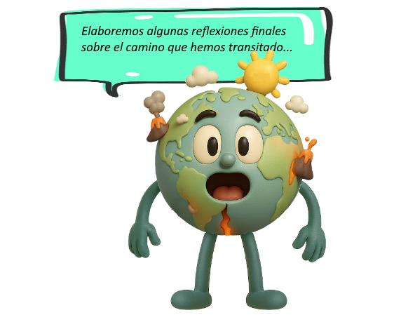

Sismos y volcanes
10- Preguntas finales para reflexionar
Pregunta Nº 1:
1 - ¿De qué te sirvió realizar el recorrido por este material educativo? ¿Aprendiste algo interesante?
(Elabora tu respuesta y luego despliega la retroalimentación)
Pregunta Nº 2:
2 - ¿Piensas que algunos de los conceptos aprendidos pueden servirte para tu vida?, ¿Cuáles, y por qué?
(Elabora tu respuesta y luego despliega la retroalimentación)
Pregunta Nº 3:
3 - ¿Cuáles de estas herramientas adquiridas piensas que te resultarán más útiles para aplicar en tu vida diaria?
(Elabora tu respuesta y luego despliega la retroalimentación)
Obra publicada con Licencia Creative Commons Reconocimiento No comercial Compartir igual 4.0